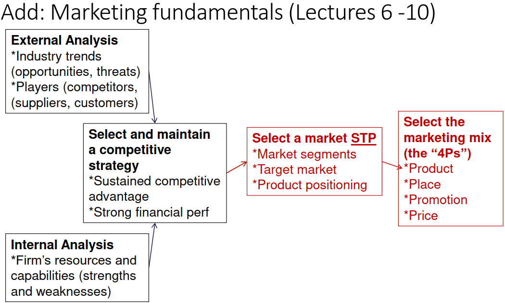
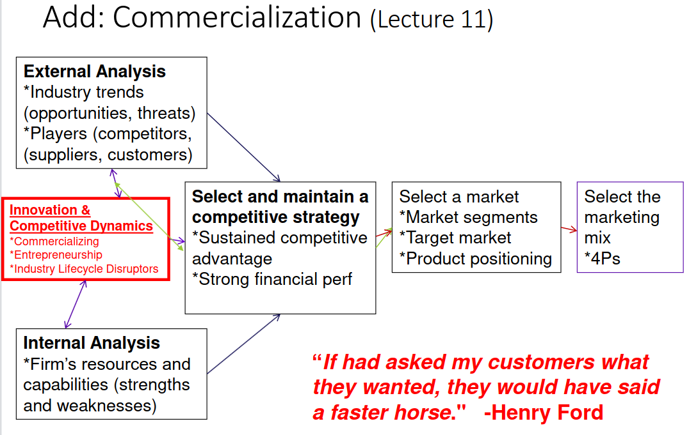
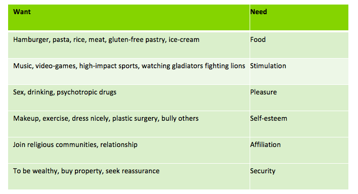

JRE410H1: Markets and Competitive Strategy
Course Outline:

Lecture 1: What is strategy
Strategies:
- competitive moves & business approaches that management uses to run the company
- intended to deliver long term competitive advantage and superior performance
3 Big Questions:
- Where are we now?
- External + Internal Analysis
- Where do we want to go?
- Businesses to be in
- Customer group to serve
- Direction to head (e.g. tech standards, partnerships)
- How will we get there?
- Strategy

Competitive Advantage: gap between price buyers will pay & costs it incurs
Internal analysis: company's resources capabilities and competitiveness.
Goal:
sustained competitive advantage resulting in superior long-run profitability
Business model:
compelling value apposition for the customer
favorable economics (profitable)
superior execution
Lecture 2: Relationship in Our Lives
Answering "where are we now involves"
External analysis: company industry and competitive environment.
Reasons for performing external analysis
- decide whether to enter environment
- iPhone
- decide whether to extricate firm from environment
- Nokia
- position firm to succeed in given industry
- RIM
- assess the effect of a major change, e.g. tech standard
- Qualcomm
- attempt to change the rules, e.g. lobbying for deregulation
- Wind(Freedom) / Verizon
Internal analysis: company's resources capabilities and competitiveness.

Figure 1: Comparison of Needs and Wants
Need: Required for life
- Physical/Biological: Oxygen, water, food, stimulation, activity, rest, physical safety.
- Psychological: Security, pleasure, comfort, identity, self-esteem, achievement.
- Social: Affiliation, intimacy, acceptance, community